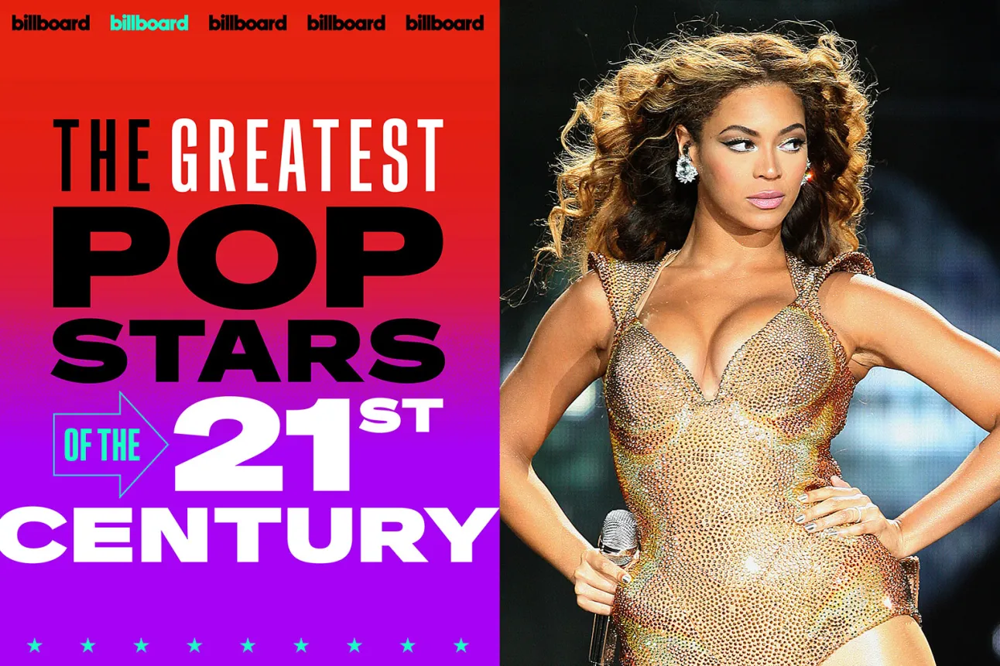
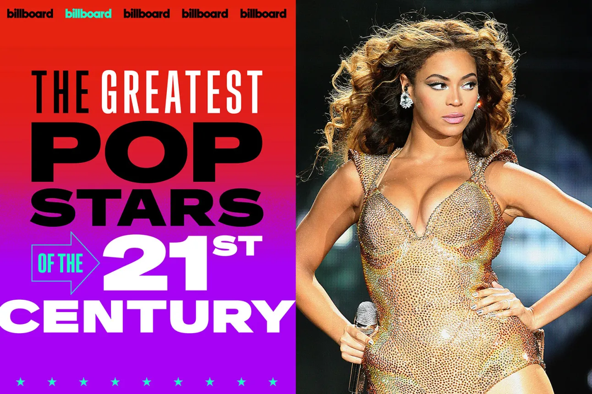

Early Life
Beyoncé Giselle Knowles-Carter was born on September 4, 1981, in Houston, Texas. She began performing at a young age and rose to fame as a member of Destiny's Child, one of the best-selling girl groups of all time.
Music Career
Following her departure from Destiny’s Child, Beyoncé’s solo career took off with her debut album Dangerously in Love (2003), which earned her five Grammy Awards. She continued to break boundaries with albums like B’Day, I Am... Sasha Fierce, 4, Lemonade, and Renaissance.
Beyoncé made history as the first Black woman to headline Coachella in 2018, with her iconic performance later documented in the Netflix film Homecoming. Most recently, she turned heads with her first country album, Cowboy Carter, and is set to go on tour for the worldwide sensation.
Discography
- Dangerously in Love — 2003
- B’Day — 2006
- I Am… Sasha Fierce — 2008
- 4 — 2011
- Beyoncé — 2013
- Lemonade — 2016
- Renaissance — 2022
- Cowboy Carter — 2024
Personal Life
- Married to Jay-Z (Shawn Carter), one of the most successful rappers and music moguls of all time.
- Mother to three children: Blue Ivy, Rumi, and Sir Carter.
- Her relationship with Jay-Z, including his infidelity rumors and their public reconciliation, became a central theme in Lemonade and his album 4:44.
Gallary

 

Explore More About Beyoncé
Check out Beyoncé's official site and follow her on social media: